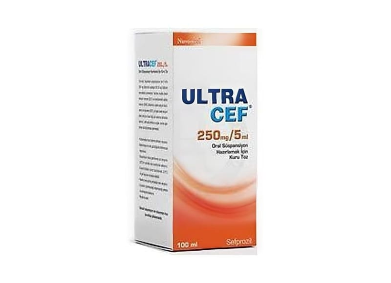

Ultracef 250 mg/5 ml Oral Süspansiyon İçin Kuru Toz, 100 ml

Ne için kullanılır
KT · Bölüm 1 ULTRACEF bal rengi şişede çocuk kilitli plastik kapak ve karton kutuda 5 ml’lik plastik ölçek kaşığı ile birlikte piyasaya sunulmaktadır. Şişede suyla karıştırılacak olan açık sarıdan kirli beyaza dönük toz karışımı bulunmaktadır. Sulandırıldığında açık sarıdan kirli beyaza dönük süspansiyon oluşur. Hazırlanan süspansiyonun her 5 ml’si etkin madde olarak 250 mg sefprozile eşdeğer miktarda 261.55 mg sefprozil monohidrat içerir. ULTRACEF beta-laktam antibiyotikler olarak adlandırılan bir ilaç grubuna dahildir. ULTRACEF, yetişkinlerde boğaz, bademcik veya sinüs iltihabı gibi üst solunum yolu enfeksiyonlarının, bronş iltihabı ve zatürre gibi alt solunum yolu enfeksiyonlarının, deri ve yumuşak doku enfeksiyonlarının ve kısa süreli idrar kesesi iltihabı (sistit) dahil başka bir tablonun eşlik etmediği (komplike olmayan) idrar yolu enfeksiyonlarının tedavisinde kullanılır.
Çocuklarda ise boğaz, bademcik, orta kulak veya sinüs iltihabı gibi üst solunum yolu enfeksiyonlarının ve başka bir tablonun eşlik etmediği (komplike olmayan) deri ve yumuşak doku enfeksiyonlarının tedavisinde kullanılır.